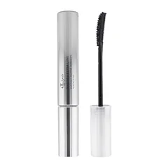

毎日つける目元に

エテュセ
マスカラ エクストラロング 01 ちゅるんブラック 6g
6g
¥1980税込・出典掲載価格
選び方と声
- 選ぶ条件：毎日まつげにつけて、3か月から半年で使い切れる人。商品ページの表記では、ロングマスカラでウォータープルーフ、お湯で落ちるタイプ。
- ガルでは、マスカラはぼろぼろになるので期限を意識しなくても使えなくなる、という声があった。口コミには、もちが良く、お湯で落ちる、という声があった
気になる声気になる点：伸びやすさは意見が分かれる。たまにしか使わない人は、買い置きが期限切れになりやすいので1本だけ持つ
販売価格・容量・送料はリンク先でご確認ください